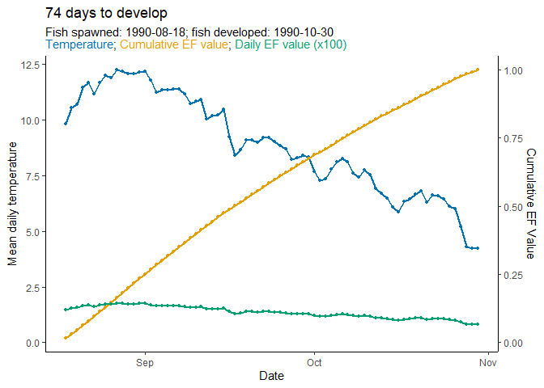

Predict hatch and emergence timing for wild fish
hatchR is an R package for predicting hatch and emergence timing for a wide range of wild fishes using the effective value framework (Sparks et al., 2019, Canadian Journal of Fisheries and Aquatic Sciences, 76(1): 123-135). hatchR offers users access to established phenological models and the flexibility to incorporate custom parameterizations using external datasets. The package includes functions for model selection, phenology prediction, and visualization. hatchR is designed to be user-friendly and accessible to a wide range of users, including researchers, managers, and educators.
A manuscript accompanying this package is in press at Fisheries, forthcoming this Fall.
Installation

Install the released version of hatchR from CRAN:
install.packages("hatchR")Install the latest development version of hatchR from GitHub:
# install.packages("pak")
pak::pak("bmait101/hatchR")Interactive Shiny App
You can also use the hatchR Shiny app to interactively predict fish developmental phenology. To run the app, visit the hatchR Shiny app.
Contributing to hatchR
We encourage users to report bugs and/or contribute to hatchR. For more detail on how to do this, please see our contributing guide (CONTRIBUTING.md).
Getting Help
There are several ways to get help with hatchR:
- Open a GitHub issue link here.
- Post on a support website like Stack Overflow or Cross Validated.
Example Usage
Below we provide a brief example showing how to use hatchR. For a thorough introduction to the software, see our introductory vignette linked here. For a list of all functions available in hatchR, see our function reference linked here.
First we load hatchR and helper packages by running
library(hatchR)
library(ggplot2) # for additional plotting options
library(lubridate) # for working with dateshatchR requires three primary data inputs:
- Water temperature data
- Species-specific model parameters
- Spawning date or date ranges
The example woody_island dataset is included in hatchR and contains temperature data from Woody Island, Lake Iliamna, Alaska. It includes daily water temperature data from 1990-1992. We can use plot_check_temp() to visually check the data. Spawning in this system typically peaks around August 18 and hatching and emergence are done before the start of the following spawning season, so we can predict phenology within a subset of a year. Because plot_check_temp() returns a ggplot2 object, we can add additional ggplot2 elements to customize the plots.
plot_check_temp(
data = woody_island,
dates = date,
temperature = temp_c
) + # additional ggplot2 elements below this `+`
geom_rect(
aes(
xmin = ymd("1990-08-18"), # spawn date
xmax = ymd("1991-04-01"), # approx phenology window end
ymin = -10, # lower bound
ymax = 25), # upper bound
fill = "grey",
alpha = 0.01
) 
Next, select hatch and emerge models we want to use to predict phenology:
sockeye_hatch_mod <- model_select(
author = "Beacham and Murray 1990",
species = "sockeye",
model = 2,
development_type = "hatch"
)Now we can predict phenology for the sockeye salmon using the predict_phenology() function:
WI_hatch <- predict_phenology(
data = woody_island,
dates = date,
temperature = temp_c,
spawn.date = "1990-08-18",
model = sockeye_hatch_mod
)We can check the predicted phenology by running:
# see days to hatch
WI_hatch$days_to_develop
#> [1] 74
# and development period
WI_hatch$dev_period
#> start stop
#> 1 1990-08-18 1990-10-30Finally, we can visualize the predicted phenology using plot_phenology():
plot_phenology(WI_hatch)
Imported Packages
hacthR imports the following R packages:
- dplyr: For data manipulation.
- ggplot2: For vignette visualizations.
- lubridate: For working with dates.
- tibble: For creating tibbles as output for various functions.
- rlang: For
.datausage. - stats: For various modeling functions (e.g.,
confint()). - lifecycle: for function lifecycle badges.
- utils: For various utility functions.
Suggested Packages
hatchR suggests the following R packages:
- knitr: For vignette building.
- readr: For reading in data.
- purrr: For iteration in vignettes.
- rmarkdown: For vignette building.
- nycflights13: For example data.
- tidyr: For vignette building.
- stringr: For vignette building.
- ggridges: For vignette building.
- patchwork: For vignette building.
- cli: For better messages.
- testthat: For unit testing.
License
This project is licensed under the GNU General Public License, GPL-3.
USDA Disclaimer
hatchR project code is provided on an “as is” basis and the user assumes responsibility for its use. USDA Forest Service has relinquished control of the information and no longer has responsibility to protect the integrity , confidentiality, or availability of the information. Any reference to specific commercial products, processes, or services by service mark, trademark, manufacturer, or otherwise, does not constitute or imply their endorsement, recommendation or favoring by USDA Forest Service.